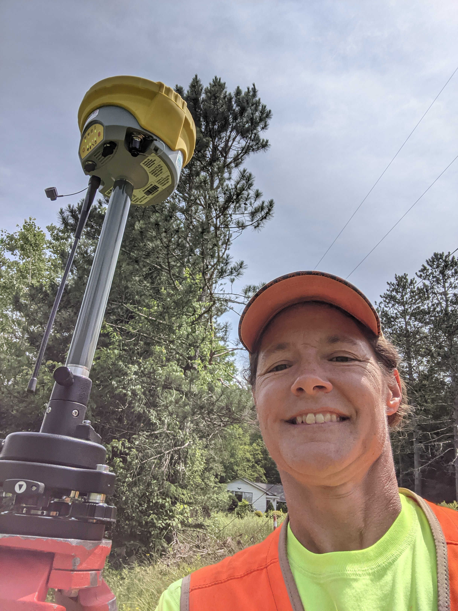

I’m originally from Ithaca, New York, and graduated from Cornell
University in 1989 with a bachelor’s degree in Natural Resources. I then
attended the New York State Ranger School in Wanakena, NY and received
an Associates degree in Forest Technology in 1990, where, along with
forestry, I learned quite a bit of surveying.. mostly with transits and
two-chain steel tape-measures.
After a three-year stint in forestry
with the Allegheny National Forest, I found my true calling and began my
land-surveying career working for D. Michael Canada out of Olean, New
York. Between economic downturns, lay-offs, part-time work, and
child-raising, I was fortunate over the years to also work under other
local legends like Gregory Bell, Robert Dill, and Frederick Moricca.
In 2010, I became licensed to practice land-surveying in the State of New
York, and went on my own, working out of the house and driving my car.
In 2013 I became licensed in the State of Pennsylvania too.